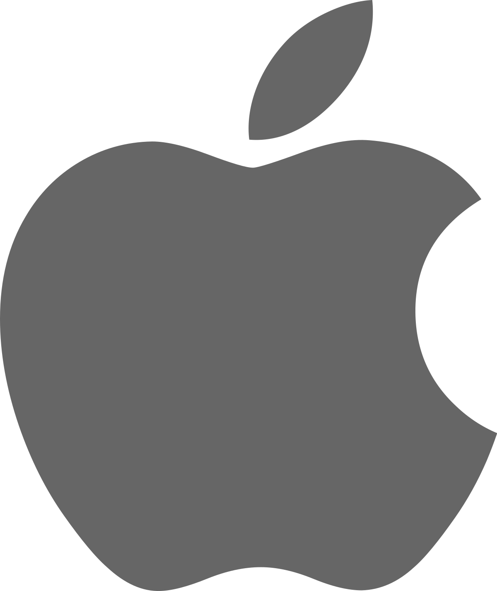
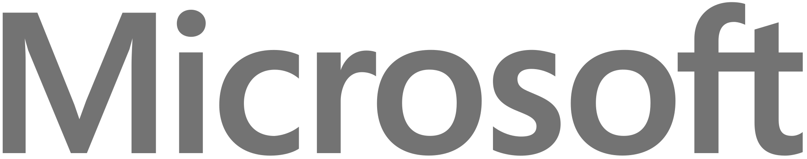
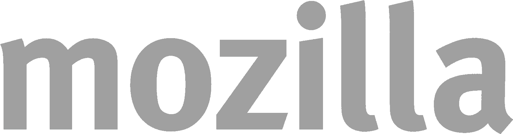
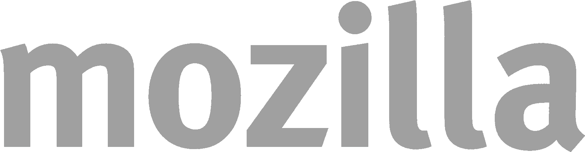
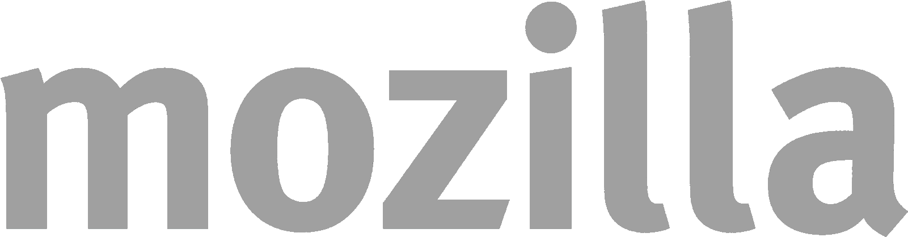

Global World
#Open Source Summit 2022
#Open Source Summit 2022
The Global Summit brings together the community of experts. academics. and activists who comprise the Cieative Commons
affiliate network in a different country every two years.
This year' we hope to expand our invitation list including organizations and individuals who want to work with us on shared
projects that advance the cause of the Comrnoos. free culture and open knowledge.
So if you're active and engaged in the worlds of open content and knowledge — free software advocates. Wikipedians. Open
Knowledge. galleries, libraries. museums. archives. governments and foundations. lawyers. and activists — we hope you'll
consider joining us this year to build a stronger. more vibrant commons together.
Please contact us per Email for any further questions about World summit of Open-Source 2022!
Global World Open-Source summit 2022 logo
The logo of Global World Open-Source summit 2022 was decided through the
logo competition from 8 June
to 7 July
see the past Global World Open-Source summits
2019
Global World Summit in North Korea
2020
Global World Summit in Russia
Parnters


 


